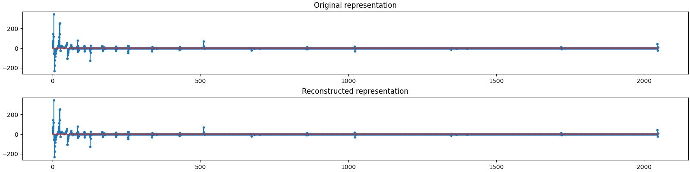
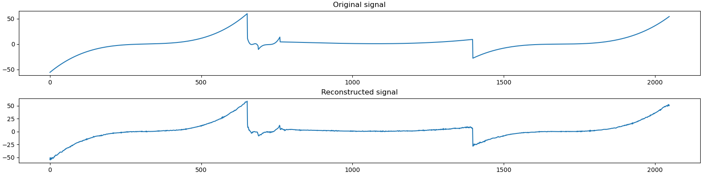

Note
Go to the end to download the full example code
Piecewise Cubic, Daubechies Basis, Gaussian Measurements¶
In this example we have
A signal \(\by\) consisting of piecewise cubic polynomials with 5 pieces of total length of 2048 samples.
A Daubechies-8 wavelet basis \(\Psi\) of shape 2048x2048 with 5 levels of decomposition.
The sparse representation \(\bx\) of the signal \(\by\) in the basis \(\Psi\) consisting of exactly 63 nonzero entries (corresponding to the spikes and the amplitudes of the cosine waves).
A Gaussian sensing matrix \(\Phi\) of shape 600x2048 making 600 random measurements in a vector \(\bb\). The columns of the sensing matrix are unit normalized.
We are given \(\bb\) and \(\bA = \Phi \Psi\) and have to reconstruct \(\bx\) using it.
Then we can use \(\Psi\) to compute \(\by = \Psi \bx\).
See also:
# Configure JAX to work with 64-bit floating point precision.
from jax.config import config
config.update("jax_enable_x64", True)
import jax.numpy as jnp
import cr.nimble as crn
import cr.sparse as crs
import cr.sparse.plots as crplot
Setup¶
We shall construct our test signal and dictionary using our test problems module.
Let us access the relevant parts of our test problem
# The combined linear operator (sensing matrix + dictionary)
A = prob.A
# The sparse representation of the signal in the dictionary
x0 = prob.x
# The Cosine+Spikes signal
y0 = prob.y
# The measurements
b0 = prob.b
Check how many coefficients in the sparse representation are sufficient to capture 99.9% of the energy of the signal
print(crn.num_largest_coeffs_for_energy_percent(x0, 99.9))
115
Check how many coefficients in the sparse representation are sufficient to capture 100% of the energy of the signal
print(crn.num_largest_coeffs_for_energy_percent(x0, 100))
278
This number gives us an idea about the required sparsity to be configured for greedy pursuit algorithms. Although the exact sparsity of this representation is 63 but several of the spikes are too small and could be ignored for a reasonably good approximation.
Sparse Recovery using Subspace Pursuit¶
We shall use subspace pursuit to reconstruct the signal.
import cr.sparse.pursuit.sp as sp
# We will first try to estimate a 100-sparse representation
sol = sp.solve(A, b0, 100)
This utility function helps us quickly analyze the quality of reconstruction
problems.analyze_solution(prob, sol, perc=100)
m: 600, n: 2048
b_norm: original: 709.229 reconstruction: 708.631 SNR: 27.74 dB
x_norm: original: 733.968 reconstruction: 732.596 SNR: 26.09 dB
y_norm: original: 733.967 reconstruction: 732.596 SNR: 26.09 dB
Sparsity: original: 278, reconstructed: 100, overlap: 100, ratio: 0.360
Iterations: 20
We will now try to estimate a 150-sparse representation
sol = sp.solve(A, b0, 150)
Let us check if we correctly decoded all the nonzero entries in the sparse representation x
problems.analyze_solution(prob, sol, perc=100)
m: 600, n: 2048
b_norm: original: 709.229 reconstruction: 709.194 SNR: 40.17 dB
x_norm: original: 733.968 reconstruction: 733.994 SNR: 37.55 dB
y_norm: original: 733.967 reconstruction: 733.994 SNR: 37.55 dB
Sparsity: original: 278, reconstructed: 150, overlap: 150, ratio: 0.540
Iterations: 20
We will now try to estimate a 200-sparse representation
sol = sp.solve(A, b0, 200)
Let us check if we correctly decoded all the nonzero entries in the sparse representation x
problems.analyze_solution(prob, sol, perc=100)
m: 600, n: 2048
b_norm: original: 709.229 reconstruction: 709.228 SNR: 57.63 dB
x_norm: original: 733.968 reconstruction: 734.022 SNR: 54.44 dB
y_norm: original: 733.967 reconstruction: 734.022 SNR: 54.44 dB
Sparsity: original: 278, reconstructed: 200, overlap: 200, ratio: 0.719
Iterations: 20
We will now try to estimate a 250-sparse representation
tracker = crs.ProgressTracker(x0=x0)
sol = sp.solve(A, b0, 250, tracker=tracker)
[1] x_norm: 9.02e-01, r_norm: 2.17e-01, SNR: 0.01 dB
[2] x_norm: 9.95e-01, r_norm: 6.92e-02, SNR: 0.01 dB
[3] x_norm: 1.01e+00, r_norm: 4.00e-02, SNR: 0.01 dB
[4] x_norm: 1.01e+00, r_norm: 3.15e-02, SNR: 0.01 dB
[5] x_norm: 1.02e+00, r_norm: 2.22e-02, SNR: 0.01 dB
[6] x_norm: 1.02e+00, r_norm: 1.81e-02, SNR: 0.01 dB
[7] x_norm: 1.02e+00, r_norm: 1.69e-02, SNR: 0.01 dB
[8] x_norm: 1.02e+00, r_norm: 1.56e-02, SNR: 0.01 dB
[9] x_norm: 1.02e+00, r_norm: 1.53e-02, SNR: 0.01 dB
[10] x_norm: 1.03e+00, r_norm: 1.51e-02, SNR: 0.01 dB
[11] x_norm: 1.03e+00, r_norm: 1.48e-02, SNR: 0.01 dB
[12] x_norm: 1.03e+00, r_norm: 1.37e-02, SNR: 0.01 dB
[13] x_norm: 1.03e+00, r_norm: 1.09e-02, SNR: 0.01 dB
[14] x_norm: 1.03e+00, r_norm: 6.98e-03, SNR: 0.01 dB
[15] x_norm: 1.03e+00, r_norm: 3.38e-03, SNR: 0.01 dB
[16] x_norm: 1.03e+00, r_norm: 1.18e-03, SNR: 0.01 dB
[17] x_norm: 1.03e+00, r_norm: 5.14e-04, SNR: 0.01 dB
[18] x_norm: 1.03e+00, r_norm: 1.14e-04, SNR: 0.01 dB
[19] x_norm: 1.03e+00, r_norm: 3.93e-05, SNR: 0.01 dB
Algorithm converged in 19 iterations.
Let us plot the progress of subspace pursuit over different iterations
Let us check if we correctly decoded all the nonzero entries in the sparse representation x
problems.analyze_solution(prob, sol, perc=100)
m: 600, n: 2048
b_norm: original: 709.229 reconstruction: 709.229 SNR: 88.12 dB
x_norm: original: 733.968 reconstruction: 733.968 SNR: 83.66 dB
y_norm: original: 733.967 reconstruction: 733.968 SNR: 83.66 dB
Sparsity: original: 278, reconstructed: 250, overlap: 250, ratio: 0.899
Iterations: 19
The estimated sparse representation
x = sol.x
Let us reconstruct the signal from this sparse representation
y = prob.reconstruct(x)
The estimated measurements
b = A.times(x)
Let us visualize the original and reconstructed representation
Let us visualize the original and reconstructed signal
Let us visualize the original and reconstructed measurements
We will now try to estimate a 278-sparse representation
sol = sp.solve(A, b0, 278)
Let us check if we correctly decoded all the nonzero entries in the sparse representation x
problems.analyze_solution(prob, sol, perc=100)
m: 600, n: 2048
b_norm: original: 709.229 reconstruction: 709.229 SNR: 83.64 dB
x_norm: original: 733.968 reconstruction: 733.968 SNR: 76.35 dB
y_norm: original: 733.967 reconstruction: 733.968 SNR: 76.35 dB
Sparsity: original: 278, reconstructed: 277, overlap: 243, ratio: 0.874
Iterations: 18
Sparse Recovery using SPGL1¶
import cr.sparse.cvx.spgl1 as crspgl1
sigma = 0.01 * jnp.linalg.norm(b0)
options = crspgl1.SPGL1Options(max_iters=1000)
tracker = crs.ProgressTracker(x0=x0, every=5)
sol = crspgl1.solve_bpic_jit(A, b0, sigma,
options=options, tracker=tracker)
[5] x_norm: 4.51e+02, r_norm: 3.46e+02, SNR: 6.15 dB
[10] x_norm: 5.92e+02, r_norm: 1.25e+02, SNR: 10.58 dB
[15] x_norm: 6.67e+02, r_norm: 1.04e+02, SNR: 15.33 dB
[20] x_norm: 6.72e+02, r_norm: 8.73e+01, SNR: 16.29 dB
[25] x_norm: 6.92e+02, r_norm: 2.75e+01, SNR: 18.33 dB
[30] x_norm: 7.00e+02, r_norm: 2.26e+01, SNR: 20.01 dB
[35] x_norm: 7.08e+02, r_norm: 2.12e+01, SNR: 22.07 dB
[40] x_norm: 7.12e+02, r_norm: 2.00e+01, SNR: 23.03 dB
[45] x_norm: 7.14e+02, r_norm: 1.97e+01, SNR: 23.85 dB
[50] x_norm: 7.14e+02, r_norm: 1.97e+01, SNR: 23.99 dB
[55] x_norm: 7.17e+02, r_norm: 8.20e+00, SNR: 24.59 dB
[60] x_norm: 7.18e+02, r_norm: 6.87e+00, SNR: 24.91 dB
[65] x_norm: 7.19e+02, r_norm: 6.95e+00, SNR: 25.32 dB
[70] x_norm: 7.19e+02, r_norm: 6.97e+00, SNR: 25.58 dB
[75] x_norm: 7.20e+02, r_norm: 7.06e+00, SNR: 25.91 dB
[80] x_norm: 7.20e+02, r_norm: 7.05e+00, SNR: 26.28 dB
[85] x_norm: 7.21e+02, r_norm: 7.07e+00, SNR: 26.65 dB
[90] x_norm: 7.21e+02, r_norm: 7.08e+00, SNR: 26.87 dB
[95] x_norm: 7.22e+02, r_norm: 7.09e+00, SNR: 27.12 dB
[100] x_norm: 7.22e+02, r_norm: 7.08e+00, SNR: 27.41 dB
[105] x_norm: 7.22e+02, r_norm: 7.09e+00, SNR: 27.59 dB
[109] x_norm: 7.22e+02, r_norm: 7.09e+00, SNR: 27.61 dB
Algorithm converged in 109 iterations.
Analyze the solution
problems.analyze_solution(prob, sol, perc=100)
m: 600, n: 2048
b_norm: original: 709.229 reconstruction: 706.592 SNR: 40.00 dB
x_norm: original: 733.968 reconstruction: 722.265 SNR: 27.61 dB
y_norm: original: 733.967 reconstruction: 722.265 SNR: 27.61 dB
Sparsity: original: 278, reconstructed: 464, overlap: 182, ratio: 0.392
Iterations: 109 n_times: 169, n_trans: 126
Try with lower threshold on allowed noise
sigma = 0.001 * jnp.linalg.norm(b0)
options = crspgl1.SPGL1Options(max_iters=1000)
tracker = crs.ProgressTracker(x0=x0, every=20)
sol = crspgl1.solve_bpic_jit(A, b0, sigma,
options=options, tracker=tracker)
[20] x_norm: 6.75e+02, r_norm: 8.29e+01, SNR: 16.64 dB
[40] x_norm: 7.12e+02, r_norm: 1.56e+01, SNR: 22.89 dB
[60] x_norm: 7.17e+02, r_norm: 1.49e+01, SNR: 25.14 dB
[80] x_norm: 7.21e+02, r_norm: 2.82e+00, SNR: 26.06 dB
[100] x_norm: 7.21e+02, r_norm: 2.52e+00, SNR: 26.56 dB
[120] x_norm: 7.23e+02, r_norm: 2.37e+00, SNR: 27.18 dB
[140] x_norm: 7.23e+02, r_norm: 2.28e+00, SNR: 27.86 dB
[160] x_norm: 7.24e+02, r_norm: 2.25e+00, SNR: 28.33 dB
[180] x_norm: 7.25e+02, r_norm: 7.61e-01, SNR: 28.60 dB
[200] x_norm: 7.25e+02, r_norm: 6.95e-01, SNR: 28.66 dB
[220] x_norm: 7.25e+02, r_norm: 7.09e-01, SNR: 28.73 dB
[240] x_norm: 7.25e+02, r_norm: 7.08e-01, SNR: 28.79 dB
[260] x_norm: 7.25e+02, r_norm: 7.02e-01, SNR: 28.94 dB
[280] x_norm: 7.25e+02, r_norm: 7.08e-01, SNR: 29.06 dB
[300] x_norm: 7.26e+02, r_norm: 7.08e-01, SNR: 29.21 dB
[320] x_norm: 7.26e+02, r_norm: 7.08e-01, SNR: 29.27 dB
[340] x_norm: 7.26e+02, r_norm: 7.08e-01, SNR: 29.32 dB
[360] x_norm: 7.26e+02, r_norm: 7.09e-01, SNR: 29.40 dB
[380] x_norm: 7.26e+02, r_norm: 7.08e-01, SNR: 29.48 dB
[400] x_norm: 7.26e+02, r_norm: 7.09e-01, SNR: 29.55 dB
[420] x_norm: 7.26e+02, r_norm: 7.09e-01, SNR: 29.63 dB
[423] x_norm: 7.26e+02, r_norm: 7.09e-01, SNR: 29.64 dB
Algorithm converged in 423 iterations.
Let us plot the progress of SPGL1 over different iterations
Analyze the solution
problems.analyze_solution(prob, sol, perc=100)
m: 600, n: 2048
b_norm: original: 709.229 reconstruction: 708.996 SNR: 60.00 dB
x_norm: original: 733.968 reconstruction: 725.987 SNR: 29.64 dB
y_norm: original: 733.967 reconstruction: 725.988 SNR: 29.64 dB
Sparsity: original: 278, reconstructed: 612, overlap: 198, ratio: 0.324
Iterations: 423 n_times: 755, n_trans: 454
The estimated sparse representation
x = sol.x
Let us reconstruct the signal from this sparse representation
y = prob.reconstruct(x)
The estimated measurements
b = A.times(x)
Let us visualize the original and reconstructed representation
plot_representations(x0, x)
Let us visualize the original and reconstructed signal
plot_signals(y0, y)
Let us visualize the original and reconstructed measurements
plot_measurments(b0, b)

Comments¶
We need 115 coefficients in the representation in the Daubechies basis to cover 99.9% of the signal energy. There are a total of 278 nonzero coefficients.
Subspace Pursuit
With K=100 (< 115), Subspace Pursuit recovery is not very good (low SNR). It converges in 20 iterations.
With K=150, SP is pretty good. All detected nonzero coefficients are part of the true support.
With K=200, the SNR further improves to 54 dB.
With K=250, the SNR further improves to 83 dB. All detected coefficients are correct so far.
Pushing the sparsity to K=278 stars causing problems however. We can see the SNR drop to 76 dB. We can notice that only 243 of the detected 277 coefficients are correct coefficients.
SPGL1
We use the basis pursuit with inequality constraints version of SPGL1 in this example.
The allowed sigma for the residual norm \(\| \bA \bx - \bb \|_2\) is chosen as a fraction of the norm of the measurements \(\| \bb \|_2\).
At a fraction of 0.01, SPGL1 converges in 106 iterations giving an SNR of 27 dB.
At a fraction of 0.001, SPGL1 converges in 486 iterations with an improved SNR of 29 dB.
It is interesting to note that while the measurement SNR has improved remarkably from 40 dB to 60 dB (as the target residual norm has reduced by a factor of 10), the improvement in signal SNR is not that good. Having a tighter bound on residual norm doesn’t lead significantly better reconstruction.
Total running time of the script: (0 minutes 53.470 seconds)
Download Python source code: 0006.pyDownload Jupyter notebook: 0006.ipynbGallery generated by Sphinx-Gallery